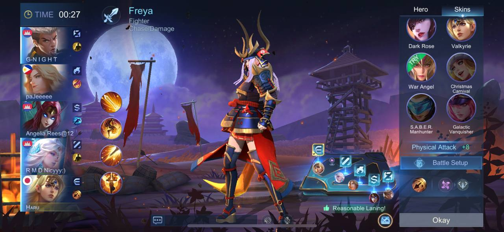

Welcome To Mobile Legends: Bang Bang

Welcome to the world of Mobile Legends: Bang Bang (MLBB), where legends are born, and the battlefield never sleeps. Prepare to dive into an exhilarating online 5v5 Multiplayer Online Battle Arena (MOBA) experience that brings players together in a fast-paced, action-packed environment. Whether you’re a first-time player just entering the world of mobile gaming or a seasoned strategist with years of experience, Mobile Legends: Bang Bang offers something for everyone. In this game, every second counts, and every decision can change the outcome of the match. With a constantly evolving roster of unique heroes, diverse strategies, and dynamic gameplay, you’ll find yourself immersed in thrilling battles that challenge both your tactical mind and your reflexes. As you step onto the battlefield, you’ll need to work together with your teammates to defeat your opponents, destroy enemy towers, and claim victory. But it’s not just about winning; it’s about building your skills, mastering your heroes, and becoming the ultimate force on the battlefield. The game offers a welcoming environment for newcomers and plenty of depth for those looking to push their skills to the limit. Team up with friends, explore new strategies, and battle your way to the top in this competitive world. The adventure is just beginning, and your journey to becoming a legend starts now.
Game Features
Unleash Your Skills With Iconic Heroes

In Mobile Legends: Bang Bang, the heroes are as diverse as the strategies you can create. Choose from an expansive and ever-growing roster of characters, each with their own unique skills, personalities, and playstyles. Whether you prefer to outwit your enemies as a stealthy assassin, lead your team with the power of a mage’s spells, or protect your allies with the resilience of a tank, there’s a hero suited for every player. Each hero is designed with intricate abilities that require skill, precision, and timing to master, offering players endless combinations of gameplay tactics. As you advance, you’ll unlock new heroes and have the ability to customize them with different skins, items, and abilities, allowing for more personal expression in how you play the game. Mastering each hero’s strengths and weaknesses is key to forming an unstoppable team. Adapt your strategy to the ever-changing dynamics of the battlefield and use your hero’s special powers to turn the tide of battle in your favor. Whether you’re a tank protecting your team, an assassin hunting down foes, or a marksman delivering the final blow from afar, every hero offers something unique that can be honed over time.
Fast-Paced 5v5 Matches
At the heart of Mobile Legends: Bang Bang is its fast-paced, real-time 5v5 combat. These action-packed matches are designed to keep players engaged and challenged, offering intense gameplay that doesn’t drag on for hours. Each match typically lasts between 10 to 15 minutes, making it perfect for gamers looking for a quick but meaningful experience. In these matches, you and your team will face off against other players in a quest to destroy the enemy’s base while protecting your own. The beautiful maps and immersive environments provide the perfect backdrop for epic clashes. But it’s not just about fighting—it’s about strategy. Every map has its own layout, objectives, and areas where you can gain an advantage over your opponents. From jungle monsters to tower sieges, each element on the map offers a new challenge and opportunity for your team to capitalize on. Every match is a race against time and a test of your ability to plan, execute, and adapt on the fly. Whether you’re farming for gold in the jungle, pushing lanes with your team, or coordinating a team fight in the enemy’s territory, every moment counts in Mobile Legends: Bang Bang.
Seamless Team Play
Teamwork is the cornerstone of Mobile Legends: Bang Bang. In this game, it’s not enough to just be good at individual gameplay; you need to work seamlessly with your teammates to achieve victory. The game provides intuitive controls and an easy-to-navigate interface that make communication and coordination a breeze. Using the in-game ping system, chat features, and quick commands, you can work with your team to execute well-thought-out strategies, whether you’re launching a coordinated attack or defending your base from enemy incursions. Teamwork extends beyond just gameplay mechanics. The game encourages you to build relationships with other players, form guilds, and participate in events together. It’s about more than just winning matches—it’s about growing as a team, learning from each other, and becoming stronger with every battle. As you build better strategies, communicate more effectively, and enhance your teamwork, you’ll begin to see your team’s cohesion improve, making every match more rewarding.
Community Selection
Join a Global Community of Gamers
With millions of players worldwide, Mobile Legends: Bang Bang has fostered a vibrant and passionate global community. Whether you’re playing with friends from across the world or battling against top-tier players from other regions, you’ll always find new people to connect with. The community offers a wealth of support, strategies, and shared experiences that help you improve your game. From casual players looking to have fun to competitive gamers striving for the top rankings, MLBB welcomes all. You can compete against players of all skill levels, participate in ranked matches, or just enjoy the friendly banter in casual modes. Form guilds, join events, and interact with other players to share tips, celebrate victories, and discuss the latest updates. There’s always something happening in the community, and as you progress in the game, you’ll find that your connections with other players become one of the most rewarding aspects of your experience.
Epic Events and Challenges
The fun doesn’t stop with just battles. Mobile Legends: Bang Bang keeps things fresh with a wide array of in-game events, seasonal challenges, and limited-time modes that give players new goals and rewards to strive for. Whether it’s a special in-game tournament, a new hero release, or an exclusive event tied to a major update, you’ll always have a reason to come back and dive into the action. These events not only offer exclusive rewards such as skins, emotes, and in-game currency, but they also provide a fresh take on gameplay, often introducing new mechanics or twists on existing ones. Participate in time-limited events and take on challenging missions to unlock unique prizes, which add an extra layer of excitement to your MLBB experience.
Call-to-Action
Download Mobile Legends: Bang Bang Now!
The battlefield awaits, and it’s calling your name! Download Mobile Legends: Bang Bang today and become a part of the action. Whether you’re looking to climb the ranks and compete in global tournaments, or just enjoy a casual battle with friends, MLBB has something for everyone. Assemble your team, pick your heroes, and show the world what you’re made of. The road to glory is paved with battles, and your journey is just beginning. Don’t let the opportunity pass you by. Take the first step toward becoming a legend, unlock new heroes, improve your skills, and challenge players from all over the world. With new updates, heroes, and events coming regularly, there’s always something new to discover. Download Mobile Legends: Bang Bang now and start your journey to the top. The world of MLBB is waiting for you. Will you answer the call?